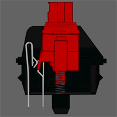

Linear Switches: Smooth as Butter
[The Best Mechanical Switch]

Linear switches are a type of switch that focus on producing a smooth, consistent actuation without any tactile feedback. Linear switches are great for people who don't like the small bump experienced from tactile switches or the loud noises from clicky switches. Linear switches are usually quiet, smooth, and consistent throughout the entire movement.They are especially used by gamers as the consistent keystrokes allow for more precision in highly competitive games. Linear switches are also enjoyed by people who prefer smooth movements while typing.
Should You Get Linear Switches?
While linear switches are smooth and nice to use, there are some factors you need to consider before jumping aboard the linear switch train.For those of you migrating from a normal keyboard, the transition can be difficult as you may bottom out the switches at first. This can lead to some mild finger pain and discomfort. Once you get used to typing on the linear switches, they can be incredibly enjoyable and fun to use. Because of bottoming out issues though, we don't recommend linear switches if it's your first mechanical keyboard. Linear switches and more specifically, linear speed switches, are often used in the gaming community to give themselves a slight competitive edge over their opponents. If gaming is what you'll primarily use your mechanical keyboard for, it may be worth it to explore some of the speed switch options from Cherry MX and Kailh.